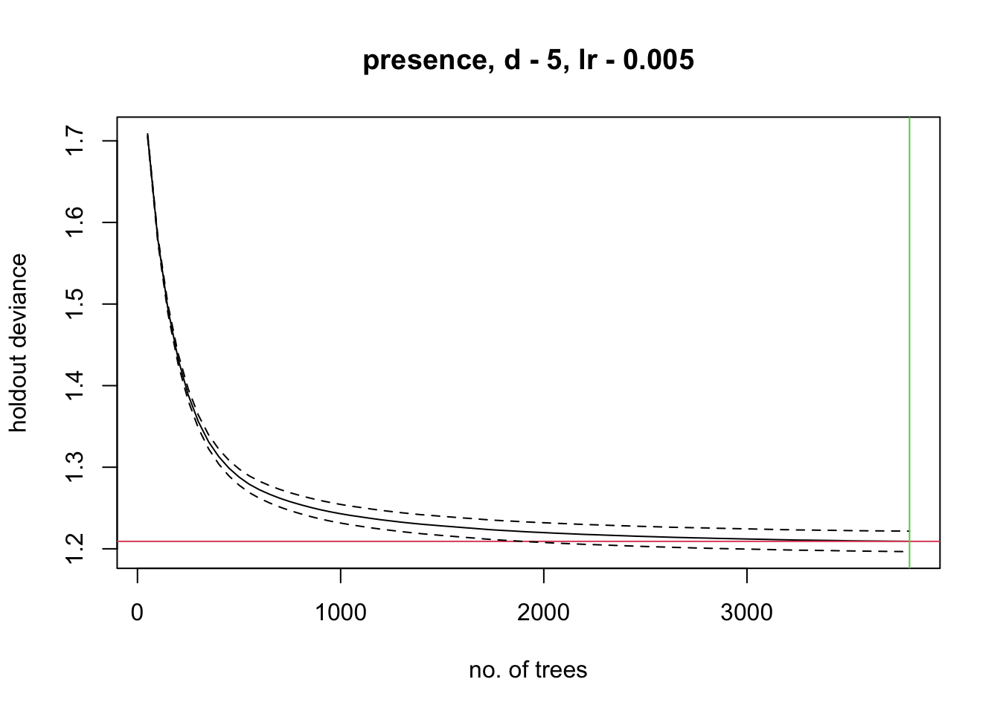
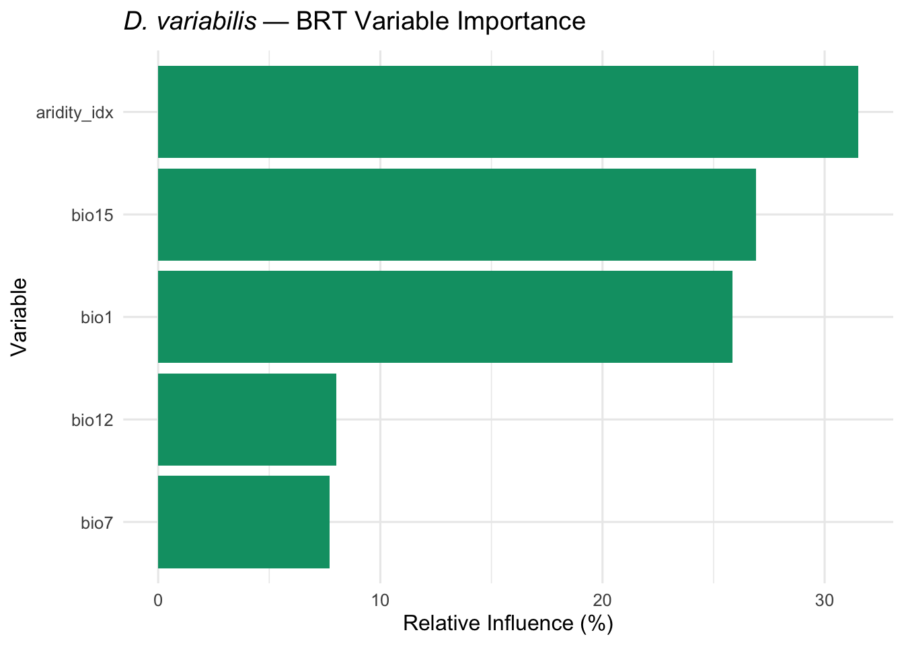
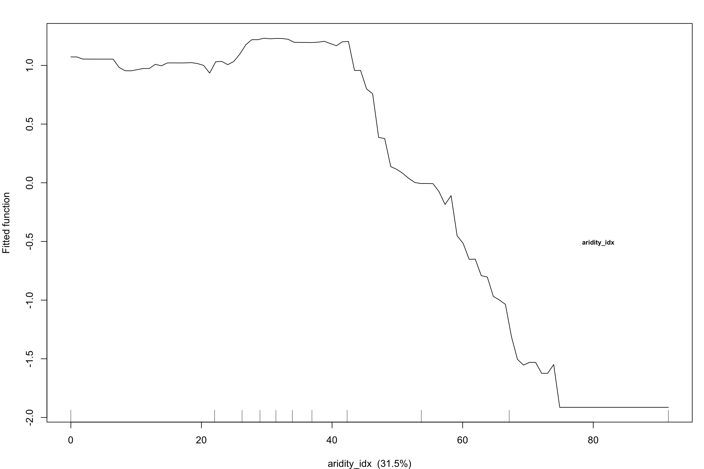
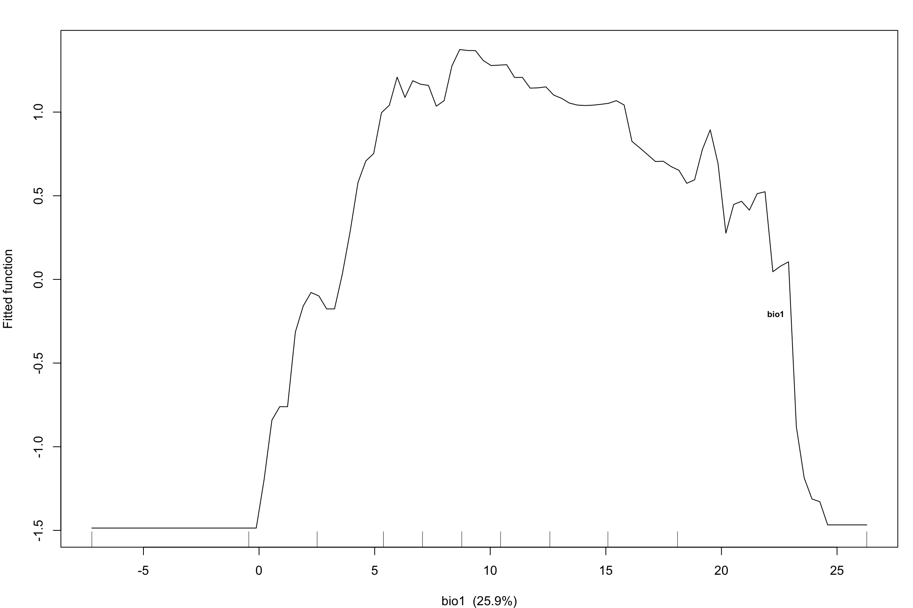
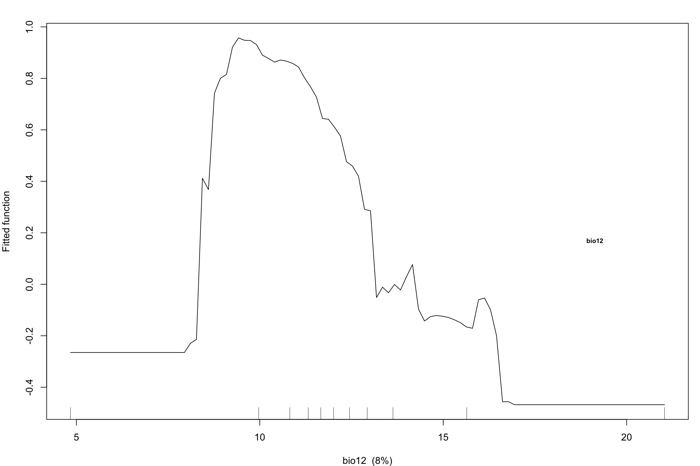
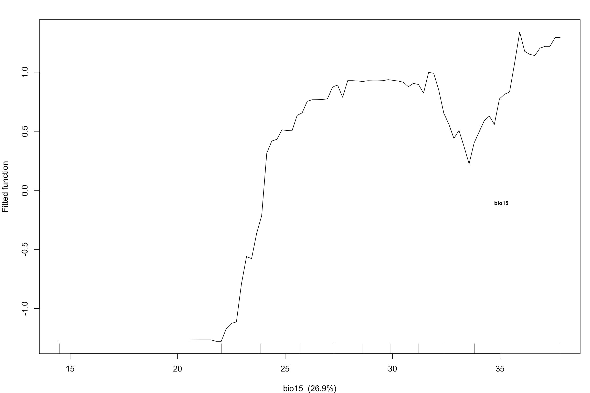
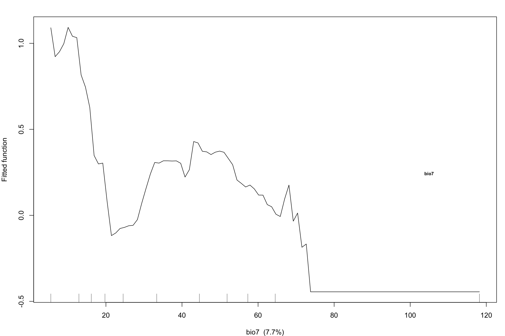

library(tidyverse)
library(terra)
library(dismo)
library(gbm)Step 5b: Boosted Regression Trees (BRT) Model
Dermacentor variabilis Species Distribution Model
Overview
This script fits a Boosted Regression Trees (BRT) model as a secondary model for comparison with MaxEnt. BRT captures non-linear relationships and interactions that MaxEnt may miss, and has been shown to outperform linear models for tick distribution modeling (90.6% vs 80.6% accuracy; PMC10054924).
We use the same occurrence data, background points, and environmental variables as the MaxEnt model (Step 5) for direct comparability.
1. Load data
base_dir <- "~/Library/CloudStorage/OneDrive-CSIRO/OneDrive - Docs/01_Projects/SDM/Dvariabilis_SDM"
processed_dir <- file.path(base_dir, "processed_data")
figures_dir <- file.path(base_dir, "figures")
# Occurrence data with environmental values
occ_env <- readRDS(file.path(processed_dir, "occurrences_with_env.rds"))
bg_env <- readRDS(file.path(processed_dir, "background_with_env.rds"))
# Selected variables
selected_vars <- readLines(file.path(processed_dir, "selected_variables.txt"))
sprintf("Occurrences: %d | Background: %d | Variables: %d",
nrow(occ_env), nrow(bg_env), length(selected_vars))[1] "Occurrences: 4580 | Background: 9955 | Variables: 5"2. Prepare presence/absence data for BRT
BRT requires a binary response: 1 for presence, 0 for pseudo-absence (background).
We also create observation weights to address the prevalence imbalance between presence and background points. Without weighting, BRT optimises overall deviance and learns “mostly absent” as the baseline, producing diffuse moderate-suitability predictions and artificially low thresholds.
# Presence data (extract selected variables)
pres_data <- occ_env %>%
dplyr::select(all_of(selected_vars)) %>%
mutate(presence = 1)
# Background (pseudo-absence) data
bg_data <- bg_env %>%
dplyr::select(all_of(selected_vars)) %>%
mutate(presence = 0)
# Combine
brt_data <- bind_rows(pres_data, bg_data)
# Create weights to equalise class influence
# Presence weight = n_bg / n_pres, background weight = 1
n_pres <- sum(brt_data$presence == 1)
n_bg <- sum(brt_data$presence == 0)
brt_data$weights <- ifelse(brt_data$presence == 1, n_bg / n_pres, 1)
sprintf("BRT training data: %d rows (%d presence, %d background)",
nrow(brt_data), n_pres, n_bg)
sprintf("Prevalence: %.1f%% — presence weight: %.2f, background weight: 1.00",
100 * n_pres / nrow(brt_data), n_bg / n_pres)[1] "BRT training data: 14535 rows (4580 presence, 9955 background)"
[1] "Prevalence: 31.5% — presence weight: 2.17, background weight: 1.00"3. Fit BRT model using dismo::gbm.step
We use gbm.step() which automatically selects the optimal number of trees via cross-validation.
set.seed(42)
cat("Fitting BRT model — this may take several minutes...\n")
# Identify predictor column indices (exclude presence and weights columns)
pred_cols <- which(names(brt_data) %in% selected_vars)
brt_model <- gbm.step(
data = as.data.frame(brt_data),
gbm.x = pred_cols,
gbm.y = which(names(brt_data) == "presence"),
family = "bernoulli",
tree.complexity = 5, # Interaction depth
learning.rate = 0.005, # Learning rate
bag.fraction = 0.75, # Stochastic fraction
n.folds = 10, # CV folds
site.weights = brt_data$weights, # Equalise class influence
verbose = TRUE
)
# If learning rate is too high (< 1000 trees), reduce and retry
if (is.null(brt_model) || brt_model$n.trees < 1000) {
cat("Reducing learning rate to 0.001 for more trees...\n")
brt_model <- gbm.step(
data = as.data.frame(brt_data),
gbm.x = pred_cols,
gbm.y = which(names(brt_data) == "presence"),
family = "bernoulli",
tree.complexity = 5,
learning.rate = 0.001,
bag.fraction = 0.75,
n.folds = 10,
site.weights = brt_data$weights,
verbose = TRUE
)
}
sprintf("BRT model fitted: %d trees, CV deviance = %.4f (+/- %.4f)",
brt_model$n.trees, brt_model$cv.statistics$deviance.mean,
brt_model$cv.statistics$deviance.se)Fitting BRT model — this may take several minutes...
GBM STEP - version 2.9
Performing cross-validation optimisation of a boosted regression tree model
for presence and using a family of bernoulli
Using 14535 observations and 5 predictors
creating 10 initial models of 50 trees
folds are stratified by prevalence
total mean deviance = 1.8989
tolerance is fixed at 0.0019
ntrees resid. dev.
50 1.7064
now adding trees...
100 1.58
150 1.4939
200 1.4329
250 1.3886
300 1.3557
350 1.3312
400 1.313
450 1.299
500 1.288
550 1.2792
600 1.2724
650 1.2669
700 1.2621
750 1.2579
800 1.2542
850 1.2509
900 1.2479
950 1.2453
1000 1.243
1050 1.2409
1100 1.2391
1150 1.2373
1200 1.2356
1250 1.2341
1300 1.2326
1350 1.2313
1400 1.2301
1450 1.2291
1500 1.228
1550 1.2271
1600 1.2261
1650 1.2252
1700 1.2241
1750 1.2232
1800 1.2225
1850 1.2218
1900 1.2211
1950 1.2204
2000 1.2199
2050 1.2193
2100 1.2187
2150 1.2182
2200 1.2177
2250 1.2173
2300 1.2168
2350 1.2164
2400 1.2159
2450 1.2155
2500 1.2151
2550 1.2148
2600 1.2144
2650 1.214
2700 1.2137
2750 1.2134
2800 1.2131
2850 1.2128
2900 1.2126
2950 1.2123
3000 1.212
3050 1.2118
3100 1.2115
3150 1.2112
3200 1.211
3250 1.2107
3300 1.2106
3350 1.2104
3400 1.2103
3450 1.2101
3500 1.2099
3550 1.2097
3600 1.2096
3650 1.2095
3700 1.2093
3750 1.2092
3800 1.2091
mean total deviance = 1.899
mean residual deviance = 1.113
estimated cv deviance = 1.209 ; se = 0.013
training data correlation = 0.631
cv correlation = 0.591 ; se = 0.005
training data AUC score = 0.888
cv AUC score = 0.863 ; se = 0.002
elapsed time - 0.04 minutes
[1] "BRT model fitted: 3800 trees, CV deviance = 1.2091 (+/- 0.0126)"4. Variable importance
# Get relative influence
brt_importance <- summary(brt_model, plotit = FALSE) %>%
as_tibble() %>%
rename(variable = var, relative_influence = rel.inf) %>%
arrange(desc(relative_influence))
cat("BRT Variable Importance:\n")
print(brt_importance, n = Inf)
# Plot variable importance
ggplot(brt_importance, aes(x = reorder(variable, relative_influence),
y = relative_influence)) +
geom_col(fill = "#009E73") +
coord_flip() +
labs(
title = expression(italic("D. variabilis") ~ "— BRT Variable Importance"),
x = "Variable",
y = "Relative Influence (%)"
) +
theme_minimal(base_size = 12)
ggsave(
file.path(figures_dir, "05b_brt_variable_importance.png"),
width = 8, height = 6, dpi = 300
)BRT Variable Importance:
# A tibble: 5 × 2
variable relative_influence
<chr> <dbl>
1 aridity_idx 31.5
2 bio15 26.9
3 bio1 25.9
4 bio12 8.02
5 bio7 7.725. Partial dependence plots (response curves)
# Generate partial dependence plots for all variables
n_vars <- length(selected_vars)
ncol_plot <- 3
nrow_plot <- ceiling(n_vars / ncol_plot)
png(file.path(figures_dir, "05b_brt_partial_dependence.png"),
width = 12, height = 2.5 * nrow_plot, units = "in", res = 300)
par(mfrow = c(nrow_plot, ncol_plot), mar = c(4, 4, 2, 1))
for (i in seq_along(selected_vars)) {
gbm.plot(brt_model, variable.no = i, plot.layout = c(1, 1),
write.title = FALSE, y.label = "Fitted function",
show.contrib = TRUE)
title(main = selected_vars[i], cex.main = 1)
}
dev.off()
# Also display inline
par(mfrow = c(nrow_plot, ncol_plot), mar = c(4, 4, 2, 1))
for (i in seq_along(selected_vars)) {
gbm.plot(brt_model, variable.no = i, plot.layout = c(1, 1),
write.title = FALSE, y.label = "Fitted function",
show.contrib = TRUE)
title(main = selected_vars[i], cex.main = 1)
}




quartz_off_screen
2 6. Interaction effects
BRT can detect pairwise interactions between variables.
# Find and display pairwise interactions
interactions <- gbm.interactions(brt_model)
cat("Top pairwise interactions:\n")
interactions$rank.list %>%
head(10) %>%
print()Top pairwise interactions:
var1.index var1.names var2.index var2.names int.size
1 4 bio15 3 bio12 178.37
2 4 bio15 2 bio1 160.137. Model performance summary
# Cross-validation performance
cv_deviance <- brt_model$cv.statistics$deviance.mean
cv_se <- brt_model$cv.statistics$deviance.se
cv_cor <- brt_model$cv.statistics$correlation.mean
cv_cor_se <- brt_model$cv.statistics$correlation.se
cat("--- BRT Model Performance ---\n")
sprintf("Number of trees: %d", brt_model$n.trees)
sprintf("Tree complexity: %d", brt_model$interaction.depth)
sprintf("Learning rate: %s", brt_model$shrinkage)
sprintf("CV deviance: %.4f (+/- %.4f)", cv_deviance, cv_se)
sprintf("CV correlation: %.4f (+/- %.4f)", cv_cor, cv_cor_se)
# Calculate AUC on training data for comparison with MaxEnt
train_preds <- predict(brt_model, brt_data, n.trees = brt_model$n.trees,
type = "response")
pres_preds <- train_preds[brt_data$presence == 1]
bg_preds <- train_preds[brt_data$presence == 0]
# Calculate AUC
auc_val <- 0
for (p in pres_preds) {
auc_val <- auc_val + sum(p > bg_preds) + 0.5 * sum(p == bg_preds)
}
auc_val <- auc_val / (length(pres_preds) * length(bg_preds))
sprintf("Training AUC: %.3f", auc_val)--- BRT Model Performance ---
[1] "Number of trees: 3800"
[1] "Tree complexity: 5"
[1] "Learning rate: 0.005"
[1] "CV deviance: 1.2091 (+/- 0.0126)"
[1] "CV correlation: 0.5914 (+/- 0.0046)"
[1] "Training AUC: 0.888"8. Save outputs
# Save BRT model
saveRDS(brt_model, file.path(processed_dir, "brt_model.rds"))
# Save variable importance
write_csv(brt_importance, file.path(processed_dir, "brt_variable_importance.csv"))
# Save model metadata
brt_metadata <- list(
n_trees = brt_model$n.trees,
tree_complexity = brt_model$interaction.depth,
learning_rate = brt_model$shrinkage,
bag_fraction = brt_model$bag.fraction,
cv_deviance = cv_deviance,
cv_correlation = cv_cor,
training_auc = auc_val,
variables = selected_vars
)
saveRDS(brt_metadata, file.path(processed_dir, "brt_model_metadata.rds"))
sprintf("Saved BRT model and metadata to processed_data/")[1] "Saved BRT model and metadata to processed_data/"